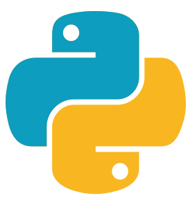

Python is an excellent programing language for begining programers as it is designed to be easy to read, learn, and use. Python is actually a layer on top of the C language, so it can be used for same things as the C language but is easier. It can be used for all kinds of tasks such as GUI programming or web programming, or even making games.